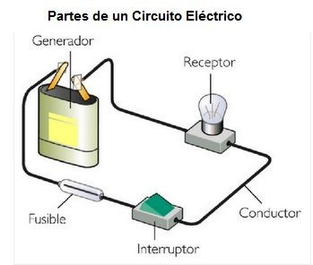

TECNOLOGÍA
circuito eléctrico es el conjunto de elementos eléctricos conectados entre sí que permiten generar, transportar y utilizar la energía eléctrica con la finalidad de transformarla en otro tipo de energía
Un Circuito Eléctrico es un conjunto de elementos conectados entre si por los que puede circular una corriente eléctrica.
La corriente eléctrica es un movimiento de electrones, por lo tanto, cualquier circuito debe permitir el paso de los electrones por los elementos
que lo componen. Solo habrá paso de electrones por el circuito si el circuito es un circuito cerrado.
Los circuitos eléctricos son circuitos cerrados, aunque podemos abrir el circuito en algún momento para interrumpir el paso de la corriente mediante un interruptor,
pulsador u otro elemento del circuito.
